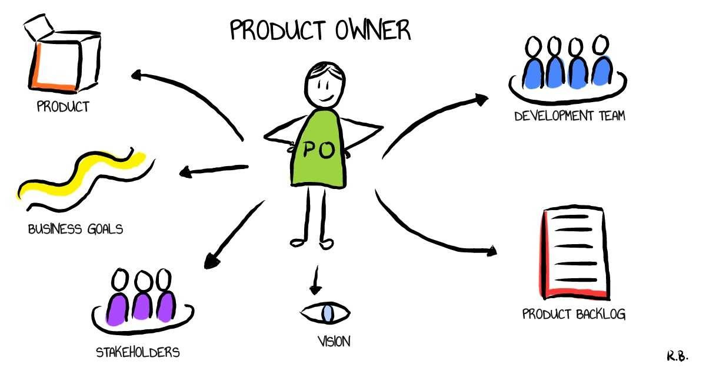

DRIVING SMOOTH PRODUCT EXECUTION AND DELIVERY: FANCITY'S WEB3 PRODUCT CULTURE

IN THE BEGINNING:
The FanCity product was built to create a Web3 Amphitheatre for Fans and Creators alike. I actively led a cross-functional team in meeting stiff stakeholder demands that saw the release of 3 versions of the product in the space of 7 months.My implementation of Scrum and then much later Kanban, saw team progress and execution have an increased speed from 25% as at when I joined the company to about 75%. I introduced high revenue generating features such as NFT collectibles, Wallets and gaming simulations into the product and closed deals with prominent investors and B-list celebrities in Nigeria.
I was also involved in the ideation process of NavAfrique, a product designed to rival the likes of Waze and Google Maps but in the African context, on this product, I introduced creative ideas and ensured the efficient design delivery of its MVP.
MY CONTRIBUTIONS:
- Implemented the Agile framework where the team had daily boxed stand-ups and other scrum ceremonies like Backlog grooming sessions, time-sized sprints, reviews and retrospectives. This was closely supervised by the Scrum Master and was a learning process in observing what worked for the team and better implementing stronger cultures to build on team execution.
- Improved trust and transparency between myself (the Product Owner) and the rest of the cross functional team.
- I was in constant sync with stakeholders and managed the backlog effectively improving team focus on specific tasks at a time and ensuring optimal delivery on features.
- Made use of JIRA in effectively allocating tickets, tracking task completion and aligning the team and stakeholders on the product roadmap.
RESULTS:
- Increased the production pace of the team by 50%
- Introduced technical and product documentations to the team and effectively introduced Scrum Ceremonies which gave developers balance on work to delivery rate
- Facilitated all Scrum Events in the absence of the Scrum Master and ensured Agile processes were followed to ensure efficient product delivery
- Launched a web application for FanCity’s pilot product after various product versions and learnings from Beta testers as well as feedback from Stakeholders
- Cleared the products mobile application for launch and efficiently delivered NavAfrique’s design to stakeholders without any issues and objections.


Built with  by Omolola Odunowo
by Omolola Odunowo